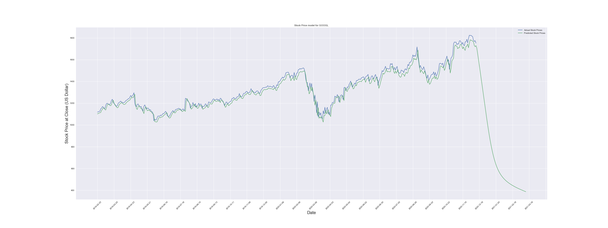
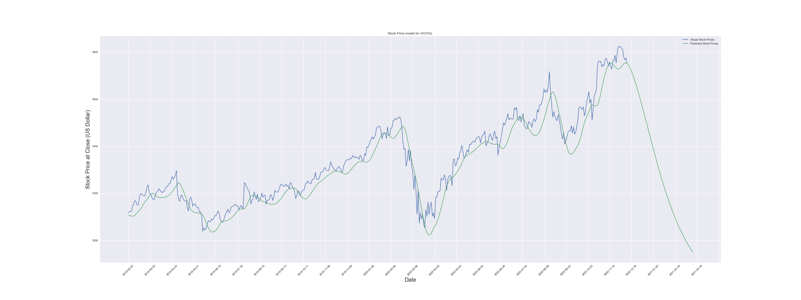
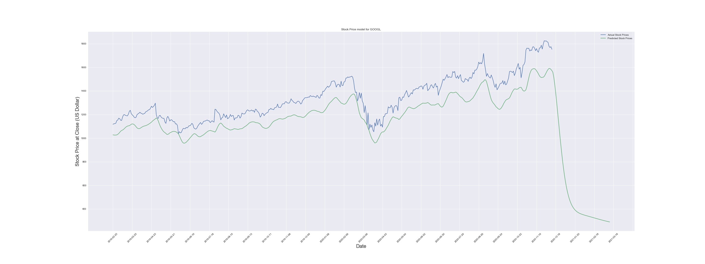
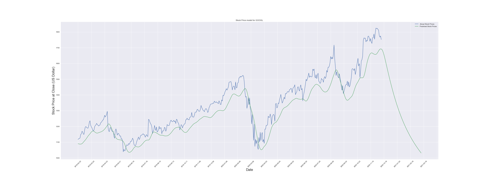

Pick Your Stock is purely an experimental tool that was built by three students who wanted to better understand machine learning. This tool is by no means meant for actual investment strategy or planning.
How Do Epochs Affect A Model?
DEFINITION - An epoch is a term used in machine learning and indicates the number of passes of the entire training dataset the machine learning algorithm has completed
Small Number of Epochs
Will allow the model to run quicker, but lower epochs decreases the overall accuracy of the model

High Epoch Number
On the other end, having a high number of epochs will increase the time it takes to process your data. The benefit of this is an increase in model accuracy
DEFINITION - Batch size is a term used in machine learning and refers to the number of training examples utilized in one iteration.
Low Batch Size
Smaller batch size will increase the time it takes to run the algorithm, but in exchange the algorithm validates itself more often which leads to increased accuracy of your model fit

High Batch Size
Higher batch sizes allow for much faster processing time, but the data is validated less often making it more prone to error
DEFINITION - Long short-term memory (LSTM) is an artificial recurrent neural network (RNN) architecture used in the field of deep learning. Unlike standard feedforward neural networks, LSTM has feedback connections. It can not only process single data points (such as images), but also entire sequences of data (such as speech or video)
Few LSTM Layers
Less nodes to process timeseries data making it much less accurate
Many LSTM Layers
Generally better fit with more layers, but does have a threshold depending upon what you're evaluating. Adding LSTM layers will not increase runtime as drastically as Epochs or Batch Size, but it will still have an affect
DEFINITION - A dense layer is just a regular layer of neurons in a neural network. Each neuron recieves input from all the neurons in the previous layer, thus densely connected.
Few Dense Layers/h2>
Less dense layers means fewer hidden nodes which equates to less interaction between all nodes

Many Dense Layers
Ironically, in an LSTM model - high density nodes cause less accuracy by confusing the sequential aspect of the timeseries data
DEFINITION - Dropout is a a technique used to tackle Overfitting . The Dropout method in keras.layers module takes in a float between 0 and 1, which is the fraction of the neurons to drop.
Low Dropout Rate
Low dropout rates may result in a very tightly fit model, which can be unfavorable if you are overfitting your model - meaning, it is not actually predicting future values

High Dropout Rate
Allows for a more fluid model, but less tight fit - may predict more generally into the future